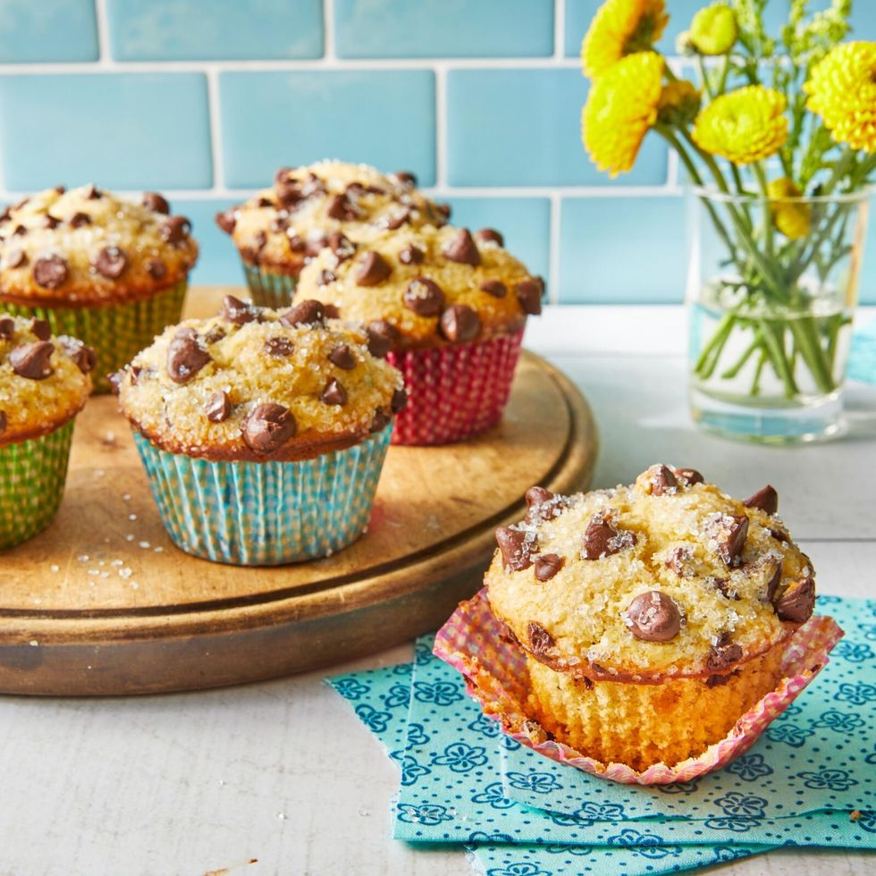

Chocolate Chip Muffins

Making delicious chocolate chip muffins
Ingredients
- 1 c. chocolate chips
- 2 c. all-purpose flour
- 1/4 c. vegetable oil
- 2 tsp. baking powder
- 1/2 tsp. kosher salt
- 1 tsp. vanilla extract
Steps
- Preheat the oven to 425°F. In a small bowl, stir together the semisweet chocolate chips and miniature chips; set aside.
- In a large bowl, whisk together the flour, baking powder, baking soda, and salt.
- In a medium bowl, whisk together the oil, melted butter, brown sugar, egg, buttermilk, and vanilla. Add to the flour mixture, stirring just until combined. Stir in 1 cup of the chocolate chip mixture.
- Spoon the batter evenly into a standard 12-cup muffin tin lined with paper liners. Top the muffins evenly with the remaining 1/2 cup chocolate chips, pressing the chips lightly into the batter. Sprinkle the muffins evenly with the sparkling sugar. Bake the muffins in the preheated oven for 5 minutes. Reduce the oven temperature to 350°F, and continue baking 12 to 14 minutes or until a wooden pick inserted in the center of a muffin comes out clean with a few moist crumbs attached. Remove the muffins to a wire rack to cool before serving.